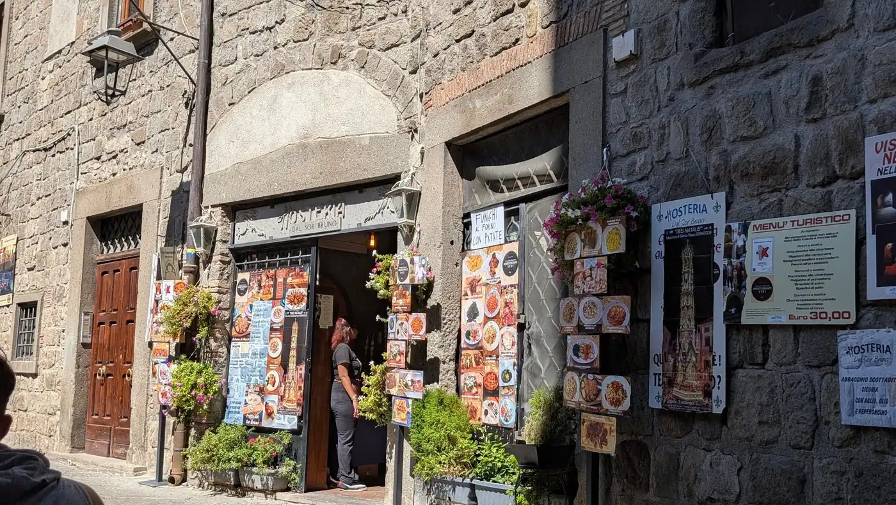
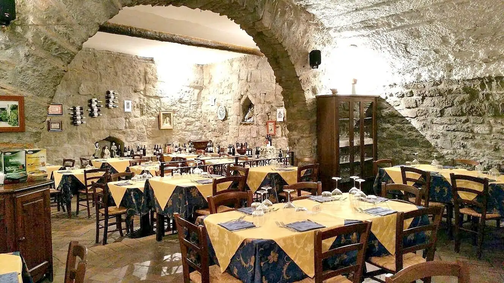
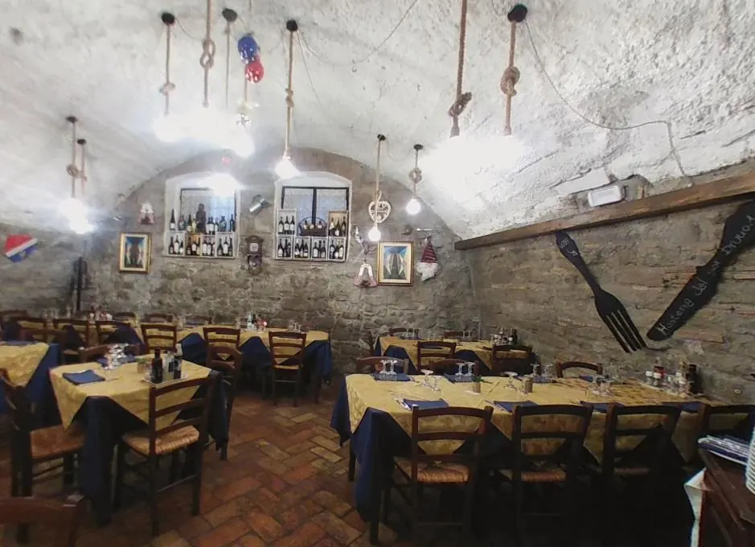
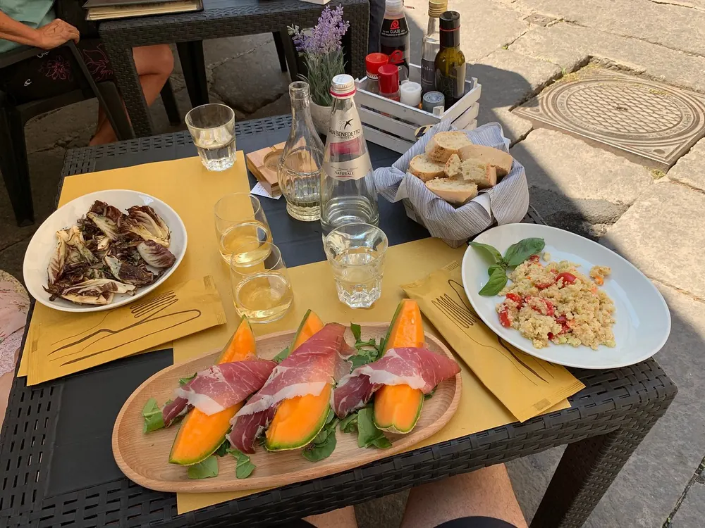
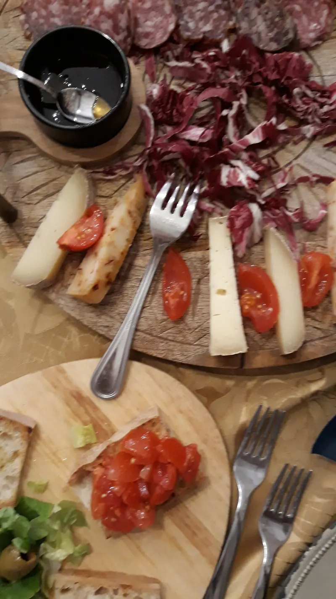
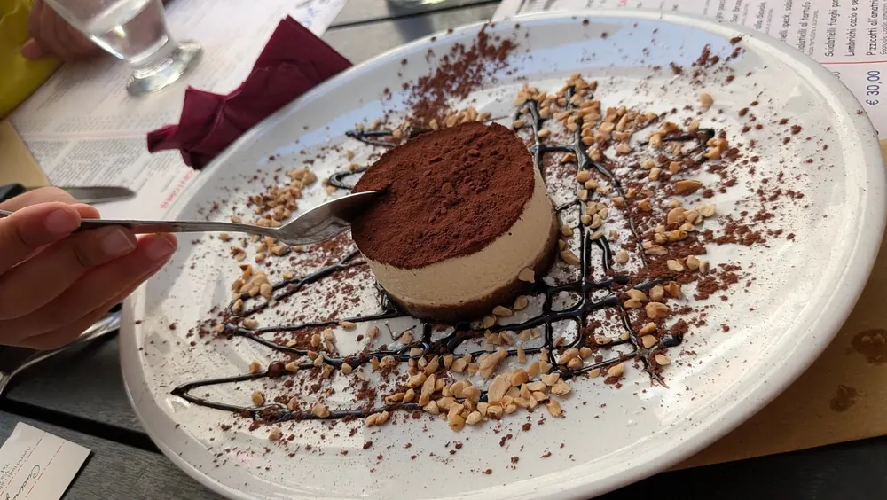

Cucina viterbese · San Pellegrino
Carbonara e porchetta a San Pellegrino.
Un'hosteria nel quartiere medievale di Viterbo: i piatti tipici della Tuscia, l'abbacchio scottadito e una cantina di 500 metri quadri. E Bruno, il padrone di casa.
Mar–Dom, pranzo e cena
- La carbonara che nominano tuttiÈ il piatto che torna di più nelle recensioni, insieme all'amatriciana.
- Una cantina di 500 metri quadriSotto le volte di pietra, nel cuore del centro storico.
- Nel quartiere medievaleIn Via San Pellegrino, tra le case di pietra della Viterbo più antica.


L'hosteria
Sotto le volte, la cantina.
L'Hosteria dal Sor Bruno sta in Via San Pellegrino, nel quartiere medievale di Viterbo. Fuori i muri di pietra, i fiori e le foto dei piatti appese alla porta; dentro le sale a volta, le tovaglie gialle e blu e le bottiglie nelle nicchie. La cucina è quella del territorio: acquacotta, porchetta, abbacchio, la carbonara.
«E poi c'è Bruno: un vero padrone di casa, di quelli che ormai sono sempre più rari.»— Stefano B., ospite, su TripAdvisor
L'hosteria
La porta, le sale, la tavola.



Dicono di noi
Si viene per la carbonara, si torna per Bruno.
«Mangiato davvero bene. Carbonara ottima. Penne all'arrabbiata erano davvero arrabbiate… La porchetta molto buona, abbacchio scottadito era spettacolare con la cicoria era ottima.»
«Cucina tipica Viterbese di alta qualità. Carbonara eccezionale, zuppa di ceci e castagne veramente eccezionale. Buono il servizio e oste molto presente.»
«Oltre al cibo veramente ottimo, devo fare i complimenti al Titolare, continuamente attento a tutte le richieste nonostante il locale fosse pieno. Da consigliare l'amatriciana.»
Prenota
Una telefonata e il tavolo è vostro.
Si prenota al telefono. Compilate qui sotto: vi prepariamo la richiesta da leggere al telefono o da mandare per email. Nel fine settimana conviene chiamare per tempo.
Gite, comitive, pranzi di famiglia.
Per i gruppi prepariamo un menù fisso. Chiamateci con la data e il numero di persone, oppure scriveteci per email.
Orari e dove
Ci trovate a San Pellegrino.
- LunedìChiuso
- Martedì12:30–15:00 · 19:30–23:00
- Mercoledì12:30–15:00 · 19:30–23:00
- Giovedì12:30–15:00 · 19:30–23:00
- Venerdì12:30–15:00 · 19:30–23:00
- Sabato12:30–15:00 · 19:30–23:00
- Domenica12:30–15:00 · 19:30–23:00
Per le feste e la sera della Macchina di Santa Rosa, meglio chiamare prima.
- A piedi: siamo nel centro storico, nel quartiere medievale di San Pellegrino.
- In auto: lasciate l'auto fuori dal centro storico e fate l'ultimo tratto a piedi.
- Come riconoscerci: la porta con l'insegna «Hosteria dal Sor Bruno», i fiori e le foto dei piatti appese fuori.
01100 Viterbo
Quartiere medievale, centro storico.